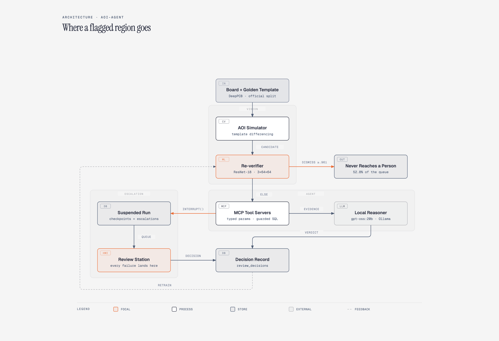
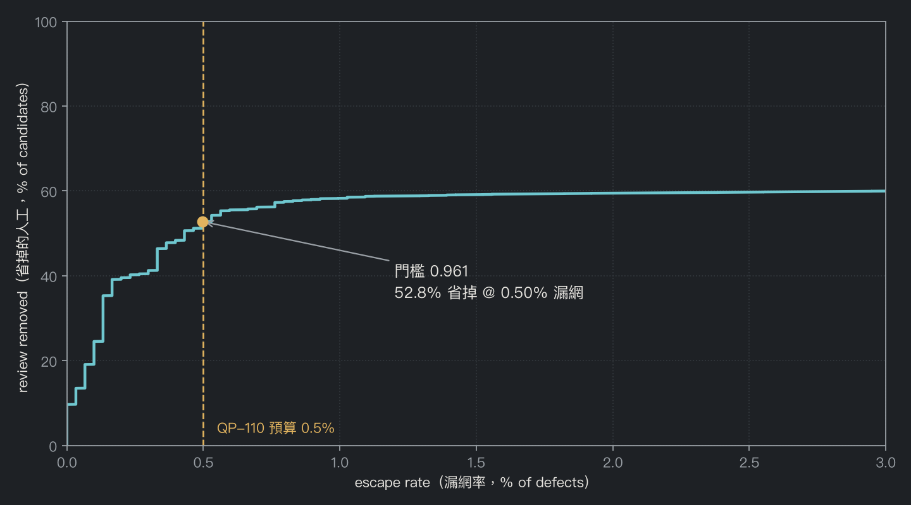
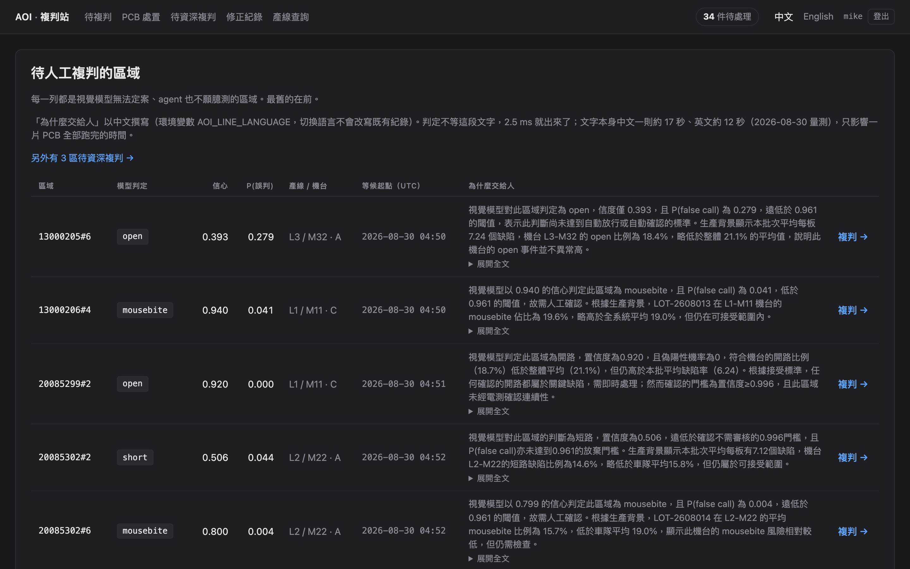
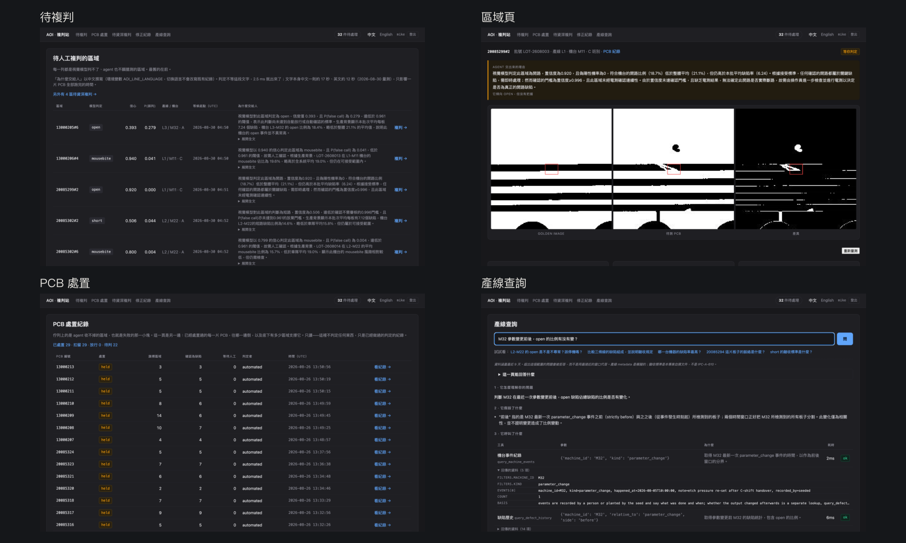

十二頁的版本。完整的 45 頁在附錄，被追問的時候翻。
Q · 55.6% 是怎麼算的？
在 7,322 個 AOI 候選裡，模型以 P(false call) ≥ 0.912 排掉的比例。那個門檻是在 trainval 上用五折交叉驗證選的，6,569 個缺陷支撐這個選擇，test 這份切分完全沒參與。
Q · 為什麼不報準確率？
準確率 96.5% 把漏一個缺陷和多看一個誤報算成一樣的錯；產線上漏一片是出貨事故、多看一個是幾秒。所以頭條是操作點，不是準確率。
Q · 0.82% 是什麼？
15/3,018 的 95% 信賴區間上緣。它說的是：這個 split 剛好 0.50%，但換一批板子可能超過 0.5% 的預算，我不能保證。
在漏網率不超過千分之五的前提下，省掉一半的人工複判——而且每個數字都有出處。
Q · 為什麼說 41.2% 這個比例不會轉移到真產線？
真產線的 AOI 誤報是真缺陷的一到兩個數量級。我量過：漏網率不受 prevalence 影響（分母是缺陷數），但省掉的人工比例會隨誤報比例上升，55.6% 是下限；在 0.5% prevalence 下是 89.0%。
Q · 你怎麼決定 0.5% 這個預算？
它來自我自己寫的品質文件 QP-110——這個專案的驗收標準全是自撰的，不是 IPC-A-610，因為那是有版權的。預算是一個輸入，不是我調出來的。
檢測機為了不漏，把每一個可疑的地方都圈起來，結果六成是假的，每一個都要人看。

Q · LLM 在這個系統裡做什麼？
只做一件事：對 17.8% 進到它那一支的區域寫一段給作業員看的說明。判定是分類器的信心決定的，量過 LLM 決定會比較差。
Q · 哪一層最貴？
時間上是 LLM：一段說明中文約 17 秒。但 85.9% 的區域根本不經過它，一個候選在複判模型上是 2.5 ms。
一個紅框進來，先被幾毫秒的模型分成三種：明顯誤報、明顯缺陷、看不準；看不準的才走到 agent，agent 寫完說明交給人。

Q · 漏檢率重要嗎？為什麼不報準確率？
它不是重要的指標之一，它是預算——其他每個數字都是在它固定之後才有意義。代價不對稱：漏一片是出貨，多報一次是三秒。準確率把這兩種錯當成一樣重，整條產線的取捨在那個數字上是看不見的。
Q · 為什麼要換掉 52.8%？
因為那個門檻是在報成績的同一份切分上掃出來的——一份資料同時做了選超參數和報成績兩件事。作為引擎之間的比較它是公平的，四個引擎各拿自己的最佳點；作為部署數字不行，因為那個點是看著這份資料挑的。
Q · 那為什麼不乾脆調到達標為止？
那會把剛拆開的兩件事又併回去。門檻只能用選擇集選，test 只能用來報告。所以現在有兩個測試故意斷言相反的方向——「aggregate 未達標」「出貨門檻在 test 上超標」——把門檻調到這份切分達標為止會讓測試變紅。
Q · 那預算到底達不達標？
看怎麼數。按候選 0.66%，超標；按缺陷——QP-110 的原文寫法——複判模型 0.35%，達標；整線 0.51%。而且真正關掉它的是電測：7 個漏掉的 open 被電測覆蓋之後，剩下 13/3018 = 0.43%，回到預算內。
Q · 換一條產線，這些數字還成立嗎？
漏檢率成立，省人工不成立。漏檢率除以缺陷總數，不良率重新加權會約掉；55.6% 假設的是這個 split 的 41.2% 不良率，線越乾淨越高。真正不能轉移的是驗證：一條只看到 100 個缺陷的試產線，確認不了 0.5% 的預算——而我自己的驗證集只有 969 個缺陷，已經吃過這個虧。
曲線上每一點是一個門檻。挑哪一點是一個決定，而那個決定不能用「等一下要拿來報告成績」的那份資料來做。
Q · 那 LLM 在系統裡還有什麼價值？
它寫給作業員的那段說明：把分類器的信心、這台機的缺陷率、驗收標準串成一段話。這在 17.8% 進到它那一支的區域上；判定永遠是分類器的。
Q · LLM 逾時為什麼不升級給人？
因為判定在進到 LLM 之前就做好了。逾時的代價是少一段說明，記成 explanation_status = timed_out，站台顯示一個「無說明」標記，有指令可以數。如果每次逾時都升級，佇列會被塞滿。
Q · 這個結論會不會因為模型變強而改變？
會，所以規則寫的是「沒有一個量測說要放回去之前，不放回去」。agent_eval.py 九分鐘可以重跑，換模型就再量。
我原本讓語言模型看完證據做最後判定；量了才發現它改分類器的答案 12 次只對 1 次。
Q · 為什麼不用另一個模型來評分？
因為那會變成兩個模型互評，而我沒有量測另一個模型的尺。三個檢查是精確的：數字對 prompt、文件編號對檢索到的段落文字、有沒有輸出。剩下三個是樣式，連句子一起發表給人看，13 筆兩分鐘裁完。
Q · 你怎麼發現檢查器自己有 bug？
6 筆 foreign_document 全部都是「有引用文件的那 6 筆」——一個檢查的命中數剛好等於它的輸入數，就要懷疑它。查下去：它拿 WI-201 去對檔名 open-circuit，永遠不相等。修成讀檢索到的段落文字，而且每列存下那組編號，之後不用重跑模型也能重算。
Q · 那英文 50/60 剩下的 10 筆是什麼？
7 筆 other_class_named、3 筆 limit——都是旗標不是精確檢查。英文 class_not_named 修掉 U+2011 之後是 0。精確檢查在兩種語言都是 0。重跑後英文 52/60，剩下 8 筆還是那兩個旗標，裁完 0 筆真的。
Q · 列了類別名之後就沒問題了？
沒點名類別的問題修掉了：27 變 0，中文乾淨 20 變 45。但重讀句子看到 5 筆把 WI-201 寫反——文件說電測導通就放行，它寫「電測證實連續開路」就放行。每個字都有來源，所以六個檢查全過；這是 rationale_check 一開始就寫明看不到的那種錯，第一次有數字。修法是 prompt 措辭或第四個旗標，還沒做。
LLM 從 08-23 起只寫說明不做判定，但那句說明從來沒被打過分。打了分：數字沒捏造、說明都有寫；可是中文版會把 open 寫成「開路」，而且只有一半的時候會。把六個類別名列進 prompt 就修掉了——然後重讀時看到一個檢查看不到的錯。

Q · 作業員一天看幾個？
這個資料集一片板約 20 個候選，82.2% 不經人；示範的 50 片板留下 34 個待複判。
Q · 為什麼說明是中文？
AOI_LINE_LANGUAGE 預設 zh-TW，作業員讀什麼語言就寫什麼；切換介面語言不會改寫紀錄。
每一列一個看不準的區域：模型判定、信心、誤判機率、產線機台，右邊是 agent 寫的說明——等最久的在最上面。

Q · 站台為什麼不用前端框架？
產線的瀏覽器常常鎖 JS、沒有網路。站台無 JS 可用，唯一的相依 vendor 進來，圖是伺服器端 SVG。
Q · 影片是怎麼錄的？
scripts/demo_record.py 用 Playwright 操作站台、Kokoro 合成旁白、ffmpeg 合成；影片不進 git，放 GitHub Release。
一片板進來、模型排掉大部分、兩個看不準的進佇列、作業員打開一個、按 0 退回、主管問一句話拿到圖。
Q · 那你把那八片板拿掉不就好了？
產線上拿不掉。而且更嚴重的是方法問題：照『哪幾片漏了』來挑要拿掉哪幾片，就是在我要報成績的那份資料上做選擇——那正是 08-31 那條 invariant 在防的事，只是換了件衣服。這是診斷不是修法。
Q · 十個瑕疵而已，那這個差距是不是根本不重要？
不能這樣讀，兩個理由。第一，三個不共用失敗模式的方法都獨立找到它。第二，它雖然小，但它決定的是門檻，而門檻決定的是上千個誤報要不要丟掉——樹那次驗證半邊 28.6% 對 test 15.9%，那是幾千個候選的差距。小的尾巴推動大的後果，這正是操作點的結構。
Q · 機率沒校準會不會就是這個差距的原因？
量過了，不是。三個 seed 配出來的溫度是 1.035、1.054、0.973——有一個小於 1，所以模型連一致地過度自信都沒有——而校準前的測試 ECE 只有 0.003 到 0.008。校準前後漏檢率幾乎不動。所以我文件裡原本掛著的『該補 temperature scaling』是以量測結案的：不需要，不是還沒做。
三種方法都說「trainval 比較容易」，但沒有一個說為什麼。量出來的答案是：整個差距是 3,018 個裡的十個區域，而它們把門檻往上頂，門檻再決定省掉多少人工。
| 有樣板 | 沒有樣板 | |
|---|---|---|
| 二值化影像 | 樣板相減就夠了 ← DeepPCB，主線 | （幾乎不存在） |
| 灰階／彩色照片 | 學出來的變化偵測 ← HRIPCB 該走這條 | 偵測器 ← PCB-AoI，做過了 |
Q · 那你要換哪一個前端？
看兩件事：有沒有樣板、是不是二值化影像。而且我不用猜——gate_check.py 拿一批板子跑一次相減就知道，DeepPCB 過、HRIPCB 任何設定都不過。HRIPCB 是有樣板的灰階照片，所以我會保留樣板、把全域門檻換成學出來的變化偵測，而不是換成偵測器。
Q · 為什麼不乾脆全部用 YOLO？
因為那會丟掉樣板通道，而樣板通道是必要的——我拿偵測器的框裁下來、用同一個 ResNet-18 只少樣板通道重訓，在 ≤0.5% 下只剩 2.8%。偵測器是「沒有樣板可用」時的答案，不是通用答案。
Q · 那 YOLO 那次不就白做了？
不是，它回答的是另一半：沒有樣板的時候會怎樣。答案是找得到（91.6%）、排不掉（1.2%）。那次的產出正好是我在 HRIPCB 上不丟掉樣板的理由。
前端不是用喜好選的。只有兩個變數——有沒有樣板、是不是二值化影像——而且有一個十分鐘的閘門可以直接告訴你答案。
Q · 如果明天給你一條真的產線，第一件事做什麼？
Shadow mode：模型跟著現有流程跑，只記錄它會怎麼判。資料庫已經支援——決定只累加不覆蓋，模型一筆、人一筆並排。目的是重建漏網率的證據，因為一個看 100 個缺陷的試跑證明不了 0.5% 的預算。
Q · 這個專案最大的限制是什麼？
資料是二值化的 DeepPCB，相減前端的適用範圍就是這種影像；真的照片要換前端，而偵測器前端的 confidence 排不掉誤報，1.2%。這兩個結論從兩邊碰頭，都量過。
四件事沒做，每一件都有一個寫下來的理由，而不是沒時間。